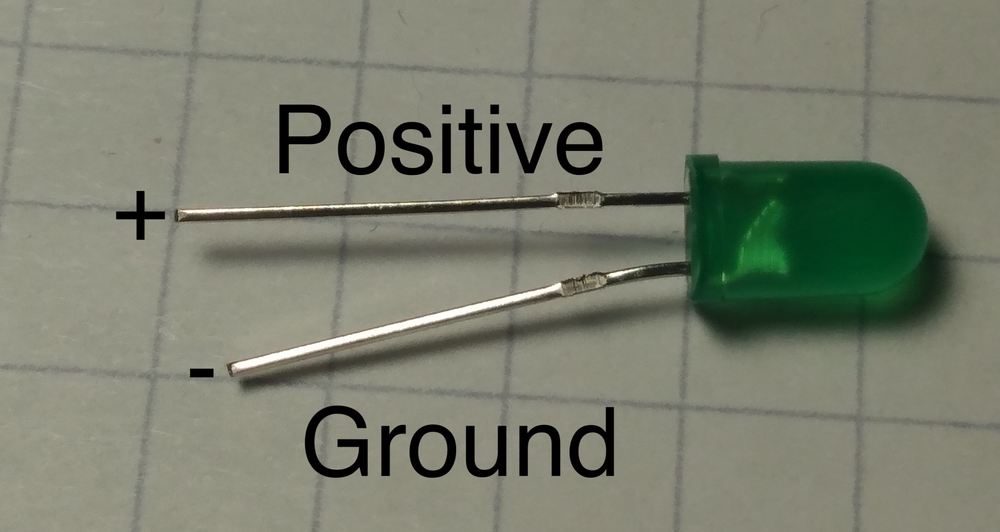
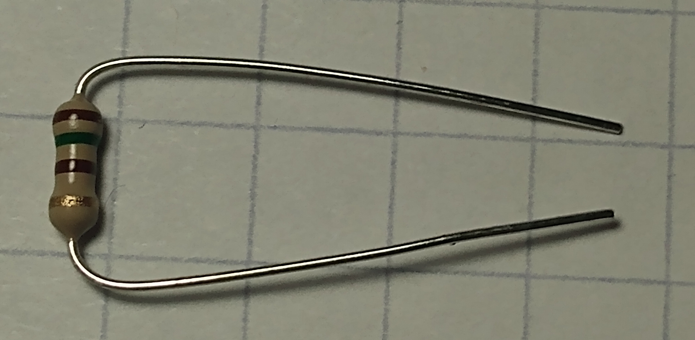

Addons
Breadboard
The breadboard is used to prototype electronic projects without gluing the wires together with metal. It does this by allowing wires to share electricity that is plugged into it.
The green lines represent how which pins share electricity. In the middle of the board, pins connected up and down share electricity. On the side of the board, pins are connected side to side.

Led
Led stands for light-emitting diode. A diode is an electronic component that allows electricity to flow one way.
The important thing to note is the wires connected to it. The long wire is positive, and the short wire is negative. When you pass electricity through it, it will emit light.

Resistor
Resistors are used to decrease the number of electrons flowing through the wire. The colored bands mark the strength of the resistor. You can use the calculator to learn more.
